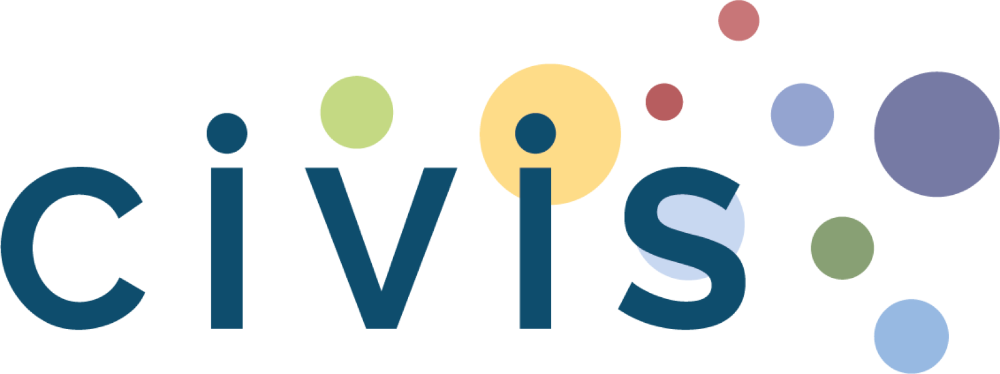

Views and opinions expressed are however those of the author(s) only and do not necessarily reflect those of the European Union or the CIVIS Alliance.
Phase 1: Online Spring School | April 20 – 23, 2026
| Time (EEST) | Monday 20/4 | Tuesday 21/4 | Wednesday 22/4 | Thursday 23/4 |
|---|---|---|---|---|
| 10:00 - 11:30 | Diachronic Linguistics Reimagined: Contemporary Perspectives. Part INikolaos Lavidas (Athens) | Verb-nominal collocations in diachrony: from Latin to Romance languagesMaria Isabel Jimenez Martinez (Madrid) | Diachronic Linguistics Reimagined: Contemporary Perspectives. Part IINikolaos Lavidas (Athens) | Descriptive linguistics in the time of AI: a multistratal approachArtemij Keidan (Sapienza) |
| 12:00 - 13:30 | The history of διότι: from Cause to Substantive Subordinator, and back againJesus Polo Arrondo (Madrid) | Ancient Greek Onomastics: the case of the Styra tabletsFrancesca Dell’Oro (Bologna) | Construction Grammar, corpus-based methods and the recent history of the English Objoid ConstructionTamara Bouso Rivas (Santiago de Compostela) | The evolution of negation examined via two cyclical models: Jespersen vs. CroftLjuba Veselinova (Stockholm) |
| 14:00 - 15:00 | Exploring how to work with historical and diachronic corporaS. Chionidi, E. Plakoutsi, N. Lavidas (Athens) | Exploring how to work with historical and diachronic corporaS. Chionidi, E. Plakoutsi, N. Lavidas (Athens) | Exploring how to work with historical and diachronic corporaS. Chionidi, E. Plakoutsi, N. Lavidas (Athens) | Exploring how to work with historical and diachronic corporaS. Chionidi, E. Plakoutsi, N. Lavidas (Athens) |
Stage 2: Hands-on Project Development (May – June 2026)
Specialized online sessions focusing on individual research findings.
July 20–24, 2026: Physical mobility to Naxos, Greece for research presentations.
